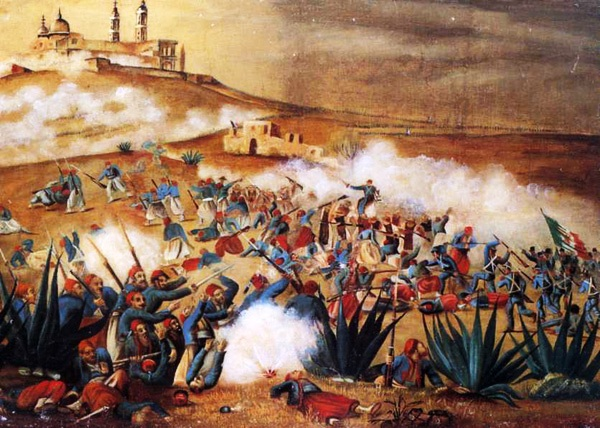
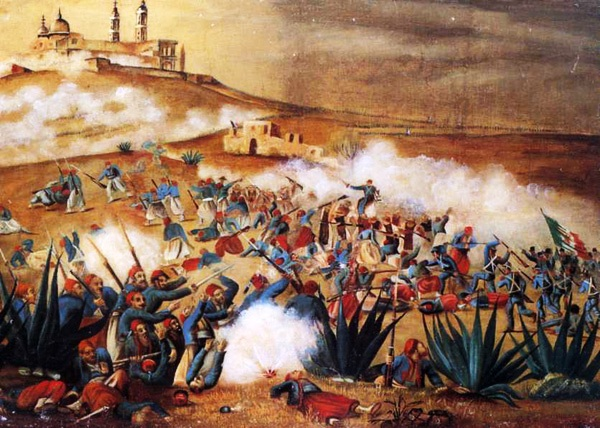

BATALLA DEL 5 DE MAYO

Después de la guerra y dada la precaria situación económica que prevalecía en le país, en junio de 1861, el Gobierno del Presidente Juárez declaró la suspensión de la deuda internacional por un periodo de dos años. El 31 de octubre de 1861, representantes de los gobiernos de España, Francia e Inglaterra se reunieron en la ciudad de Londres para establecer la exigencia al gobierno mexicano de cumplir con el pago de la deuda por un monto mayor a los 80 millones de dólares. El incumplimiento de los pagos generó la amenaza de una intervención armada. A principios de 1862, batallones de los tres países acreedores desembarcaron en el puerto de Veracruz, en un evidente intento de invasión. Juárez llegó a un acuerdo diplomático con ingleses y españoles, estableciendo los acuerdos de La Soledad, y sus escuadras fueron repatriadas, pero no sucedió lo mismo con los franceses. Tropas adicionales al ejército Francés integradas por belgas, austriacos y soldados de La Legión Extranjera desembarcaron en Veracruz en marzo de 1862.
Confiando Lorencez en esos planes, el día 19 de abril, a las tres de la tarde, marchó hacia el altiplano acompañado de Saligny y de Almonte. Con un contingente de 6,000 soldados bien dispuestos, Lorencez avanzó hacia Orizaba, llegando a Fortín a media tarde. Las hostilidades empezaban al rimper los franceses los tratados. Zaragoza, que estaba en Orizaba con 4,000 hombres y ocho cañones, se retiró hacia Las Cumbres, paso obligado hacia el altiplano. En Orizaba, Lorencez recibió nuevos refuerzos dirigidos por los coroneles L´Herillier y Gambier, quienes llevaron el peso de la primera fase de la campaña, y se aprestó a iniciar el ascenso hacia las grandes ciudades, Puebla y México. El 27 de abril por la mañana, acompañado por el ave negra de Saligny y por Almonte. Inició su marcha sobre Puebla. La víspera escribía, lleno de soberbio optimismo, al ministro de la Guerra párrafos reveladores del complejo de superioridad de todos los europeos. Transponer Las Cumbres de Acultzino representó una primera etapa. Zaragoza se dispuso a hacerle frente, después de haber desviado a fuerzas reaccionarias de Zuloaga y otros jefes que venían a auxiliare a los franceses. Con 4,000 hombre, de los cuales sólo la mitad actuó, divididos en cinco brigadas de infantería, tres baterías de montaña de seis piezas y 200 caballeros, Zaragoza, auxiliado por el coronel Días, trató de impedir el avance del enemigo. Los batallones de cazadores, compañías de zuavos e infantes de marina lograron ampararse de varias alturas tras duros ataques a la bayoneta u desalojar a las fuerzas mexicanas, que se replegaron a San Agustín del Palmar. Los invasores penetraron hasta la Cañada de Ixtapan. El 1 de mayo, reunidos todos los contingentes y eufóricos antes las promesas de Saligny de que Puebla les recibirían con lluvia de flores, los invasores marchó hacia la ciudad de los Ángeles. Zaragoza había reunido en Puebla a sus tropas, ordenado se levantaran barricadas en las calles y planeando hacer su defensa amparándose en tres eminencias que rodean la ciudad y en las que existían fortificaciones de cierta importancia: las de los cerros de San Juan, Guadalupe y Loreto. Sus tropas, cercanas a los 12,000 hombres debido a los refuerzos recibidos, estaban dirigidas por los gerentes, con 1,200 soldados y dos baterías de campaña, defendáis las alturas y fue quien llevó el peso de la batalla y a quien se debió el triunfo, auxiliado heroicamente por todo sus compañero, dirigidos certeramente por el general Ignacio Zaragoza.


En octubre de 1861, Francia, Inglaterra y España suscribieron la Convención de Londres, en la cual se comprometieron a enviar contingentes militares a México para reclamar sus derechos como acreedores por una deuda que ascendía alrededor de 80 millones de pesos, aproximadamente eran 69 millones para los ingleses, 9 millones para los españoles y 2 millones para Francia.
El contingente europeo, estaba compuesto de la siguiente manera:
España: 6000 hombres al mando del General Juan Prim
Francia: 3000 hombres dirigidos por el Contraalmirante Jurien de la Gravière.
Reino Unido: 700 marines bajo el comando del Comodoro Dunlop.2
Poco después de reunirse, los representantes de los tres países enviaron un ultimátum al gobierno mexicano en el que pedían el pago de sus deudas; de lo contrario, invadirían el país. Juárez, quien gobernaba a un país que apenas empezaba a levantarse de la postración económica, respondió con un exhorto a lograr un arreglo amistoso, y los invitó a conferenciar. Acompañó ese mensaje con la derogación del decreto que suspendió los pagos. Al mismo tiempo, en vista de la posibilidad real de una invasión militar que buscara llegar hasta la Ciudad de México, ordenó el traslado de pertrechos y la fortificación de Puebla, así como crear una unidad, a la que se designó como Ejército de Oriente, que fue puesta bajo el mando del general José López Uraga. En vista del desempeño deficiente de este mando, fue destituido y en su lugar se designó a Zaragoza, quien dejó el Ministerio de Guerra y se dirigió a Puebla para organizar la oposición al avance francés con cerca de 10,000 hombres; cantidad mínima si se toma en cuenta el vasto territorio que debía cubrirse.
El 28 de abril, el Ejército de Oriente se topó con la columna de Lorencez en un paso de montaña en las Cumbres de Acultzingo, en el límite entre Veracruz y Puebla, lo que representó el primer encuentro bélico formal. Zaragoza no pretendía cortarle el paso a los invasores, sino más bien foguear a sus soldados, muchos de ellos faltos de experiencia, y al mismo tiempo causarle el máximo de pérdidas posible al enemigo. En la llamada Batalla de Las Cumbres murieron 500 franceses, mientras las bajas mexicanas ascendieron sólo a 50. Pese a este saldo favorable, Zaragoza aún tenía desconfianza sobre el desempeño real de sus tropas en un combate en campo abierto. Luego de la retirada de los mexicanos, los franceses tomaron control del paso, con lo que aislaron al centro del país del principal puerto en el Golfo, y tuvieron la vía franca hacia Puebla.
 

Una de las más grandes batallas que haya librado nuestro país, tuvo lugar, aquí mismo, en la ciudad de Puebla. De ella, como se verá en las páginas siguientes salieron varias personas, que, se convirtieron en héroes nacionales.
La batalla del cinco de mayo nos recuerda que alguna vez, hace ya muchos años, fuimos capaces de, aunque sólo fuera por una vez, ganarle al más fuerte.
La que sigue es una historia, digna del cine, la historia de unos indígenas que, con coraje y valor lucharon contra el, entonces ejército más poderoso del mundo, y lo venció. De esta historia se desprenden nombres como los de Negrete, Díaz, Zaragoza, y muchos otros, que hoy son ídolos nacionales.
A las 9:15 de la mañana del 5 de mayo, los franceses aparecieron en el horizonte, avanzando desde la cercana Hacienda de Rementería, cruzando fuego con las guerrillas de caballería que se batían en retirada y que no se replegaron hasta que las líneas francesas estuvieron formadas y listas para avanzar. La batalla se inició en forma a las 11:15 de la mañana, anunciándose con un cañonazo desde el Fuerte de Guadalupe y acompañado por los repiques de las campanas de la ciudad. En ese momento se dio una maniobra sorpresiva: la columna francesa, que venía avanzando en orden de oriente a poniente, se dividió en dos: la primera, compuesta por aproximadamente 4000 hombres y protegida con su artillería, dio un violento viraje hacia la derecha y se dirigió hacia los fuertes; mientras que la segunda columna, compuesta por el resto de la infantería, quedó como reserva. Los conservadores Almonte y Antonio de Haro y Tamariz, que acompañaban a los franceses, habían sugerido que el ataque se dirigiera a las inmediaciones del ex Convento del Carmen, en el sur de la ciudad, tomando como antecedente lo que sucedió en el sitio durante la Guerra con Estados Unidos. Lorencez, confiado en la superioridad de sus tropas, así como en el auxilio que esperaba del contingente de Márquez, desoyó el consejo y decidió concentrar el ataque en los fuertes, donde los mexicanos contaban con la ventaja. Zaragoza advirtió la maniobra y rápidamente replanteó su plan de batalla, movilizando las tropas hacia las faldas del cerro. El 6o. Batallón de la Guardia Nacional del Estado de Puebla,6 bajo el mando del entonces coronel Juan Nepomuceno Méndez, fue el primer cuerpo del Ejército de Oriente en hacer frente a los franceses, al ubicarse en la línea comprendida entre los fuertes, y rechazar su ataque.7 Zaragoza hizo avanzar a las fuerzas de Berriozábal a paso veloz entre las rocas, situándolas entre la hondonada que separa a Loreto y Guadalupe. Mientras, el general Antonio Álvarez con su brigada protegió el flanco izquierdo de los reductos. La línea de batalla mexicana formó un ángulo que se extendió desde Guadalupe hasta un sitio conocido como Plaza de Román, frente a las posiciones enemigas. Zaragoza dispuso que el general Lamadrid defendiera con las tropas potosinas y dos piezas de artillería el camino que conectaba a la ciudad con la garita de Amozoc. La derecha de la línea de batalla mexicana la cerró Porfirio Díaz con la División de Oaxaca, auxiliado por los escuadrones de Lanceros de Toluca y Oaxaca. Los franceses continuaron su avance, colocando sus baterías frente a Guadalupe, al tiempo que devolvían el fuego mexicano proveniente de esa posición.

Nuevamente los franceses tuvieron que huir temerosos ante semejante masacre, haciendo la segunda retirada, por si fuera poco, un valiente cabo mexicano de apellido Palomino, se infiltró entre los franceses batiéndose cuerpo a cuerpo con ellos y tomó la bandera francesa al asesinar al portador del estandarte, lo que resultó un terrible golpe psicológico y anímico para las tropas y los generales franceses. A las 2:30 p.m. del 5 de Mayo, el Conde de Lorencez, se dispuso a lanzar un tercer ataque, dirigiendo sus tropas hacía el fuerte de Guadalupe, dispuso una columna de defensa y protección compuesta por los restos de los cuerpos de los soldados franceses muertos en la batalla, (una escena miserable y aterradora para los soldados franceses vivos) el batallón número 99 francés estaba prácticamente integro y era una enorme reserva francesa que tenían lista para atacar por la parte derecha de la línea de batalla mexicana, pero estaban muy atemorizados ante la eficacia y capacidad bélica demostrada por los fuertes de Loreto y Guadalupe. Ante ésta situación, la gente de San Luís Potosí, al mando del general Lamadrid, libró una terrible batalla directa a fusiles y bayoneta contra los franceses, a grado que los franceses tuvieron que refugiarse en una casa situada en la falda del cerro, la tomaron y se guarnecieron en ella, pero poco duraron ahí, porque las tropas de San Luís Potosí a cargo de Lamadrid se encargaron de exterminarlos, los franceses que quedaron, fueron desalojados y expulsados de la casa, algunos franceses fueron atrapados y capturados, otros salieron corriendo dispersados y huyeron. El Conde de Lorencez, a esas alturas estaba realmente preocupado y atemorizado, porque sabía que estaba perdiendo la guerra ante los mexicanos, haber fallado más de 1000 cañonazos iniciales sobre los fuertes de Guadalupe y Loreto fue un terrible error táctico militar, que le había costado una enorme masacre y desmotivación para su ejército francés, pero antes de rendirse, se jugó las ultimas cartas que le quedaban, e inició un cuarto y un último ataque igualmente fallido. Entrada la tarde del 5 de mayo empezó a llover, era un fuerte aguacero que llenó de lodo los caminos, dificultando el avance de las tropas francesas porque se atascaban en el lodazal. El General Ignacio Zaragoza, observó a distancia la problemática de avance por parte de las tropas francesas y dispuso que el Batallón de Reforma de San Luis Potosí, saliera al frente en protección y auxilio del fuerte de Loreto, ordenó aprovechar que los franceses estaban atascados en el lodazal para atacarlos cuerpo a cuerpo con los lanceros oaxaqueños a bayonetas y machetazos, lo que resultó devastador para los militares franceses.

Debido principalmente a la cantidad de deudas, , Inglaterra y España subscribieron el Convenio de Londres, por el cual se comprometieron a intervenir por el uso de la fuerza en México para reclamar sus derechos como acreedores, mientras tanto el Presidente Benito Juárez declaró suspendidos los compromisos adquiridos y aplazó pagar la deuda a las naciones europeas. Tras desembarcar en Veracruz, España e Inglaterra aceptaron las explicaciones mexicanas dadas en los Tratados de La Soledad, los cuales tenían como fundamento, el respeto a la soberanía territorial, el reconocimiento de las naciones acreedoras al Estado Mexicano, la entrada al terreno de las negociaciones para llegar a acuerdos en común, que beneficiaría tanto a la República Mexicana, como a los intereses de las potencias invasoras, y por último, se permitiría que los soldados de los tres países se establecieran en las ciudades mexicanas de Orizaba, Córdoba y Tehuacán durante las negociaciones, debido a lo malsano del clima imperante en el puerto de Veracruz; en caso contrario, los soldados de las tres potencias se retirarían a las costas de Veracruz para así comenzar las hostilidades.
CAUSAS DE LA BATALLA DE LA BATALLA DEL 5 DE MAYO
CONSECUENCIAS DE LA BATALLA DEL 5 DE MAYO
Debido principalmente a la cantidad de deudas, , Inglaterra y España subscribieron el Convenio de Londres, por el cual se comprometieron a intervenir por el uso de la fuerza en México para reclamar sus derechos como acreedores, mientras tanto el Presidente Benito Juárez declaró suspendidos los compromisos adquiridos y aplazó pagar la deuda a las naciones europeas. Tras desembarcar en Veracruz, España e Inglaterra aceptaron las explicaciones mexicanas dadas en los Tratados de La Soledad, los cuales tenían como fundamento, el respeto a la soberanía territorial, el reconocimiento de las naciones acreedoras al Estado Mexicano, la entrada al terreno de las negociaciones para llegar a acuerdos en común, que beneficiaría tanto a la República Mexicana, como a los intereses de las potencias invasoras, y por último, se permitiría que los soldados de los tres países se establecieran en las ciudades mexicanas de Orizaba, Córdoba y Tehuacán durante las negociaciones, debido a lo malsano del clima imperante en el puerto de Veracruz; en caso contrario, los soldados de las tres potencias se retirarían a las costas de Veracruz para así comenzar las hostilidades. Solo los representantes de España e Inglaterra comprendieron la situación que guardaba la República Mexicana, al analizar los argumentos, decidieron negociar de manera independiente ante la autoridad mexicana, privilegiando a la nación mexicana con un triunfo diplomático, que dadas las difíciles circunstancias, permitió encauzar esfuerzos posteriormente hacia la intervención del Imperio Francés; pero ellos tenían otros planes. El primero, el pronto pago con intereses de la deuda, esto incluía un cobro exagerado por parte de la "Casa Jecker", debido a destrozos causados durante la Guerra de Reforma, dos, tener control total y absoluto de las aduanas, así como intervención directa en la política económica del país, y tres, el más común, imponer un gobierno monárquico en México, con miras a contrarrestar el creciente poderío de los Estados Unidos. Sin embargo, un mal entendido por parte de los representantes de las tres potencias, aunado a los ambiciosos planes de la representación francesa de sus propios tratados, inicio pronto las hostilidades con el ejército de Napoleón III, dando por iniciada la Segunda Intervención Francesa en México. Al frente del ejército francés venía Charles Ferdinand Latrille, Conde de Lorencez, quien partió de Veracruz en dirección a la ciudad de México, pasando por Tehuacán y avanzado hacia el oeste. Para contrarrestar este avance, el gobierno mexicano de Benito Juárez creó una unidad bélica conocida como Ejército de Oriente, primeramente al mando del General José López Uraga y posteriormente del general Ignacio Zaragoza, hasta entonces Ministro de Guerra y Marina y veterano de la guerra con los Estados Unidos y de la Guerra de Reforma. El 16 de abril de 1862, el General Juan Prim, Jefe de la Fuerzas Españolas escribía a Ignacio Zaragoza, que no habiéndose puesto de acuerdo los representantes de los tres países, solo los españoles e ingleses aceptarían los términos que Benito Juárez propusiese en los Tratados de la Soledad, y se reembarcarían de regreso a casa. También puso en alerta a Zaragoza que los franceses no aceptaron esto, pues vieron fallas en este decreto, y que exigían pronto el pago, pues se veían amenazados por los prusianos y no tenían con que solventar una guerra, por lo cual comenzarían una invasión hacia la capital de la República, supuestamente para poder obtener el pago de la deuda.


En Palacio Nacional en la Ciudad de México se sabía poco acerca del conflicto. Finalmente, a las 5:49 de la tarde, del 5 de mayo, Zaragoza envía un telegrama y anuncia la victoria: “Las armas del Supremo Gobierno se han cubierto de gloria: el enemigo ha hecho esfuerzos supremos por apoderarse del Cerro de Guadalupe, que atacó por el oriente de izquierda y derecha durante tres horas: fue rechazado tres veces en completa dispersión y en estos momentos está formado en batalla, fuerte de más de 4,000 hombres, frente al cerro de Guadalupe, fuera de tiro. No lo bato, como desearía, porque el Gobierno sabe (que) no tengo para ello fuerza bastante. Calculo la pérdida del enemigo, que llegó hasta los fosos de Guadalupe en su ataque, en 600 o 700 entre muertos y heridos; 400 habremos tenido nosotros. Sírvase vd. dar cuenta de este parte al C. Presidente.— I. Zaragoza” La histórica Batalla de Puebla dio inicio antes del mediodía del 5 de mayo de 1862 y finalizó alrededor de las cinco de la tarde con una memorable victoria para el pueblo de México.
Consecuencias de la Revolución Francesa
1-Se destruyó el sistema feudal
2-Se dió un fuerte golpe a la monarquía absoluta
3-Surgió la creación de una República de corte liberal
4-Se difundió la declaración de los Derechos del hombre y los Ciudadanos
5-La separación de la Iglesia y del Estado en 1794 fue un antecedente para separar la religión de la política en otras partes del mundo
6-La burguesía amplió cada vez más su influencia en Europa
7-Se difundieron ideas democráticas
8-Los derechos y privilegios de los señores feudales fueron anulados
9-Comenzaron a surgir ideas de independencia en las colonias iberoamericanas
10-Se fomentaron los movimientos nacionalistas .